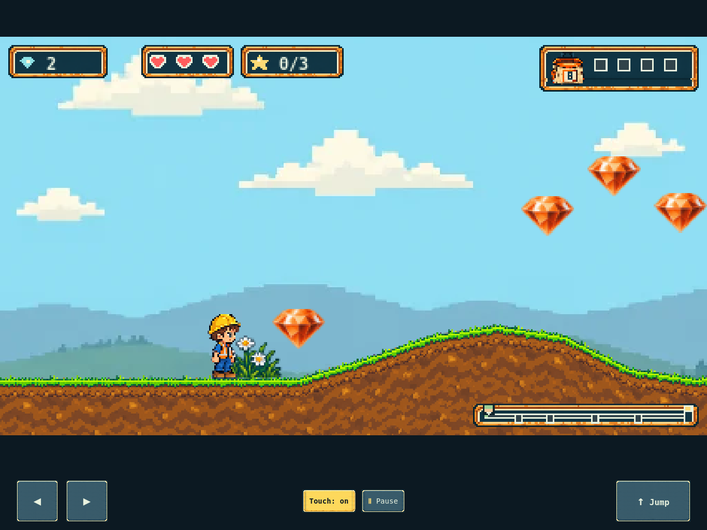
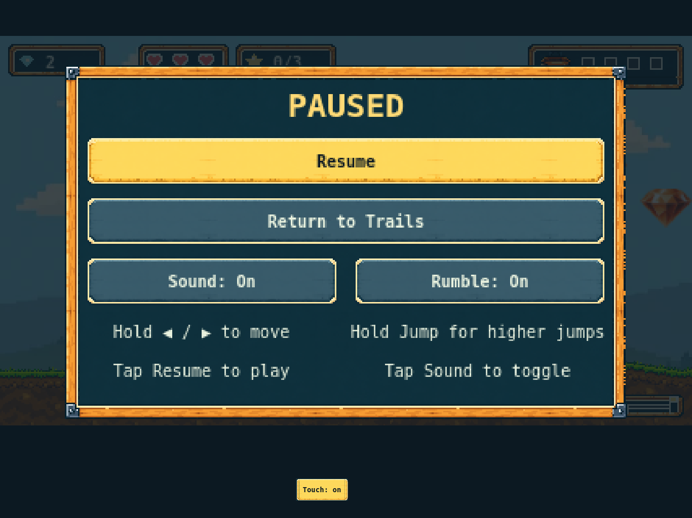

Room for both hands80 px direction buttons and a 144 × 80 px Jump button, outside the playfield.
Existing artworkThe current button and selected-button assets provide normal and held states. No new generated art.
Running prototype captures from automated WebKit at a representative 1366 × 1024 CSS-pixel viewport. Target: 13-inch iPad Air in landscape. These previews scale to fit this conversation; physical iPad reach, comfort and performance remain untested.